import pandas as pd
from sklearn.model_selection import train_test_split
from sklearn.preprocessing import StandardScaler
import re
pd.set_option('display.max_rows', None)
# Load the dataset
data = pd.read_csv('../../data/processed-data/brand_model_year_tax_data.csv').drop(
[
'The State Federal Information Processing System (FIPS) code',
'The State associated with the ZIP code',
'Number of returns [3]',
'City',
'State',
'Model Year',
'Make',
'Model',
'Electric Vehicle Type',
'Clean Alternative Fuel Vehicle (CAFV) Eligibility',
],
axis = 1
)
# Remove non-letters from columns names
regex = re.compile(r"\[|\]|<", re.IGNORECASE)
data.columns = [regex.sub("", col) if any(x in str(col) for x in set(('[', ']', '<'))) else col for col in data.columns.values]
data.columns = [re.sub(r'[0-9]', '', col).strip() for col in data.columns]
data.columns = [re.sub(r'/', '_', col) for col in data.columns]
# Group by 'ZIPCODE' and sum the 'Vehicle Count'
grouped_data = data.groupby('ZIPCODE')['Vehicle Count'].sum().reset_index()
# Selecting columns L to CY (indexes 11 to 102)
features_to_use = data.columns[3:-1]
# Ensuring correct selection of numeric columns
numeric_features_to_use = data[features_to_use].select_dtypes(include=['number']).columns
# Grouping these features by ZIPCODE and summing them
grouped_features = data.groupby('ZIPCODE')[numeric_features_to_use].sum().reset_index()
# Merging the summed Vehicle Count with the grouped features on ZIPCODE
merged_data = grouped_data.merge(grouped_features, on='ZIPCODE')
# Extracting the features (X) and target (y)
X_grouped = merged_data[numeric_features_to_use]
y_grouped = merged_data['Vehicle Count']
# Scale data
scalar = StandardScaler()
scale = scalar.fit_transform(X_grouped)
# Splitting the data into training and testing sets
X_train_grouped, X_test_grouped, y_train_grouped, y_test_grouped = train_test_split(
X_grouped, y_grouped, test_size=0.2, random_state=42)Statistical Analysis
Import Libraries & Data
Preprocess, Transform, and Build Models
import numpy as np
import pandas as pd
from sklearn.impute import SimpleImputer
import matplotlib.pyplot as plt
import seaborn as sns
from sklearn.linear_model import LinearRegression
from sklearn.ensemble import StackingRegressor, HistGradientBoostingRegressor, RandomForestRegressor
from sklearn.tree import DecisionTreeRegressor
import xgboost as xgb
from sklearn.metrics import mean_squared_error, r2_score
import scipy.stats as stats
# Define a function to log transform all features
def log_transform_all_features(data):
return np.log1p(data)
# Impute missing values with the median and then log transform all features
def preprocess_and_log_transform_data(X):
imputer = SimpleImputer(strategy='median')
X_imputed = imputer.fit_transform(X)
X_imputed_df = pd.DataFrame(X_imputed, columns=X.columns)
X_transformed = log_transform_all_features(X_imputed_df)
return X_transformed
# Preprocess and log transform the training and test datasets
X_train_transformed = preprocess_and_log_transform_data(X_train_grouped)
X_test_transformed = preprocess_and_log_transform_data(X_test_grouped)
# Define the models
models = {
'HistGradientBoosting_Regressor': HistGradientBoostingRegressor(),
'Decision_Tree_Regressor': DecisionTreeRegressor(max_depth=5, random_state=42),
'XGBoost_Regressor': xgb.XGBRegressor(objective='reg:squarederror', n_estimators=100, learning_rate=0.1, max_depth=5, random_state=42),
'Random_Forest_Regressor': RandomForestRegressor(random_state=42),
}
# Function to plot Q-Q plot, residuals distribution, and predicted vs. actual
def plot_model_diagnostics(y_true, y_pred, model_name):
residuals = y_true - y_pred
plt.figure(figsize=(18, 10))
# Residuals Distribution
plt.subplot(1, 2, 1)
sns.histplot(residuals, kde=True, bins=30)
plt.title(f'Residuals Distribution for {model_name}')
plt.xlabel('Residuals')
plt.ylabel('Frequency')
# Predicted vs Actual
plt.subplot(1, 2, 2)
plt.scatter(y_true, y_pred, alpha=0.5, edgecolor='k')
plt.plot([y_true.min(), y_true.max()], [y_true.min(), y_true.max()], 'r--', lw=2)
plt.title(f'Predicted vs. Actual for {model_name}')
plt.xlabel('Actual Values')
plt.ylabel('Predicted Values')
plt.grid(True)
plt.tight_layout()
plt.savefig(f'../../results/output/model_results/{model_name}.png')
plt.show()
# Train each model and plot diagnostics
for name, model in models.items():
model.fit(X_train_transformed, y_train_grouped)
predictions = model.predict(X_test_transformed)
# Print model evaluation metrics
rmse = mean_squared_error(y_test_grouped, predictions, squared=False)
r2 = r2_score(y_test_grouped, predictions)
print(f"{name} - RMSE: {rmse}, R-squared: {r2}")
# Plot model diagnostics
plot_model_diagnostics(y_test_grouped, predictions, name)HistGradientBoosting_Regressor - RMSE: 76.95904869760996, R-squared: 0.8665557984630057
Decision_Tree_Regressor - RMSE: 79.61198784609248, R-squared: 0.8571970227079834
XGBoost_Regressor - RMSE: 69.21407326176023, R-squared: 0.8920632600784302
Random_Forest_Regressor - RMSE: 71.30168705871802, R-squared: 0.8854539974855006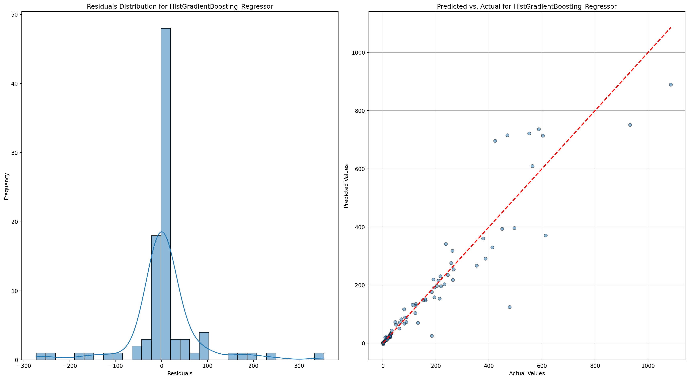
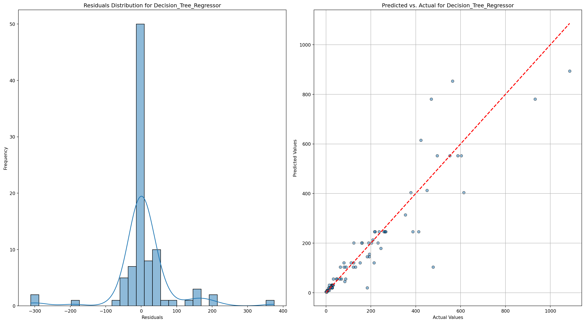
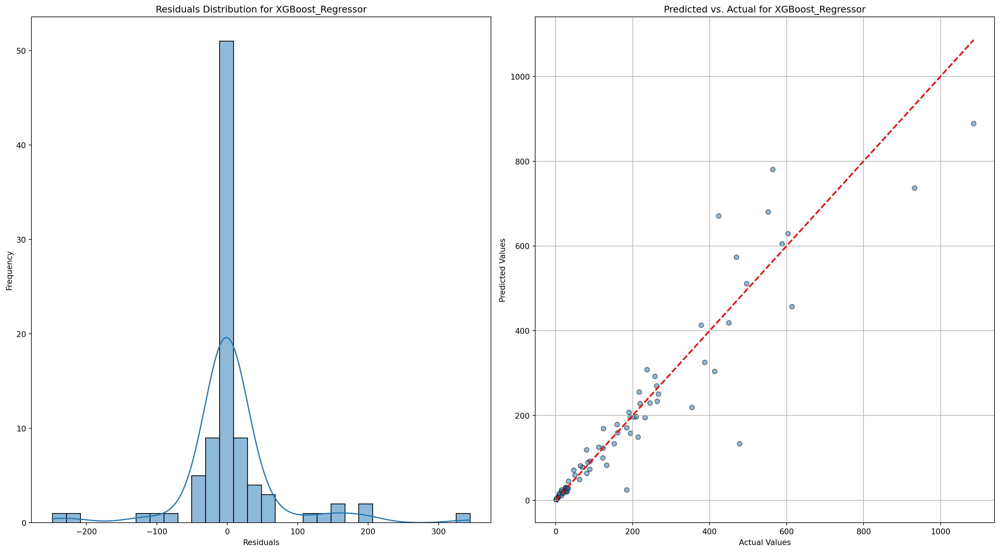
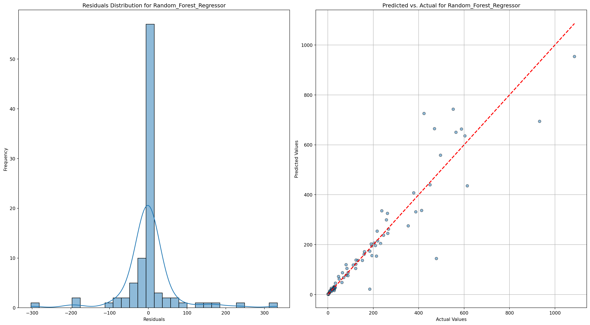
Variable Importance - Top 10
from sklearn.inspection import permutation_importance
import pandas as pd
# Train the models on the transformed training data
xgboost_model = xgb.XGBRegressor(objective='reg:squarederror', n_estimators=100, learning_rate=0.1, max_depth=5, random_state=42)
hist_gb_model = HistGradientBoostingRegressor()
dec_tree_model = DecisionTreeRegressor(max_depth=5, random_state=42)
rand_for_model = RandomForestRegressor(random_state=42)
xgboost_model.fit(X_train_transformed, y_train_grouped)
hist_gb_model.fit(X_train_transformed, y_train_grouped)
dec_tree_model.fit(X_train_transformed, y_train_grouped)
rand_for_model.fit(X_train_transformed, y_train_grouped)
# Get feature names from the transformed data
feature_names = X_train_transformed.columns
# Extract feature importances from XGBoost
dec_tree_importances = dec_tree_model.feature_importances_
dec_tree_feature_importance = pd.DataFrame({
'Feature': feature_names,
'Importance': dec_tree_importances
}).sort_values(by='Importance', ascending=False)
# Extract feature importances from XGBoost
xgboost_importances = xgboost_model.feature_importances_
xgboost_feature_importance = pd.DataFrame({
'Feature': feature_names,
'Importance': xgboost_importances
}).sort_values(by='Importance', ascending=False)
# Compute feature importances using permutation importance for HistGradientBoostingRegressor
hist_gb_importances = permutation_importance(hist_gb_model, X_test_transformed, y_test_grouped, n_repeats=10, random_state=42)
hist_gb_feature_importance = pd.DataFrame({
'Feature': feature_names,
'Importance': hist_gb_importances.importances_mean
}).sort_values(by='Importance', ascending=False)
# Extract feature importances from XGBoost
rand_for_importances = rand_for_model.feature_importances_
rand_for_feature_importance = pd.DataFrame({
'Feature': feature_names,
'Importance': rand_for_importances
}).sort_values(by='Importance', ascending=False)
# Display the top 10 important features from each model
print("Top 10 Important Features from XGBoost:")
print(xgboost_feature_importance.head(10))
print("\nTop 10 Important Features from HistGradientBoostingRegressor (Permutation Importance):")
print(hist_gb_feature_importance.head(10))
print("\nTop 10 Important Features from Decision Tree:")
print(dec_tree_feature_importance.head(10))
print("\nTop 10 Important Features from Random Forest:")
print(rand_for_feature_importance.head(10))
# Plotting function
def plot_feature_importance(importances, model_name):
plt.figure(figsize=(10, 5))
plt.barh(importances['Feature'], importances['Importance'], color='skyblue')
plt.xlabel('Importance')
plt.ylabel('Feature')
plt.title(f'Feature Importance - {model_name}')
plt.gca().invert_yaxis() # Invert y-axis to have the most important feature at the top
plt.grid(True)
plt.tight_layout()
plt.savefig(f'../../results/output/variable_importance/{model_name}.png')
plt.show()
# Plotting feature importance for XGBoost
plot_feature_importance(xgboost_feature_importance.head(10), 'XGBoost')
# Plotting feature importance for HistGradientBoostingRegressor (Permutation Importance)
plot_feature_importance(hist_gb_feature_importance.head(10), 'HistGradientBoostingRegressor (Permutation Importance)')
# Plotting feature importance for HistGradientBoostingRegressor (Permutation Importance)
plot_feature_importance(rand_for_feature_importance.head(10), 'Random Forest Regressor')
# Plotting feature importance for HistGradientBoostingRegressor (Permutation Importance)
plot_feature_importance(dec_tree_feature_importance.head(10), 'Decision Tree Regressor')Top 10 Important Features from XGBoost:
Feature Importance
29 Self-employed health insurance deduction amount 0.633054
30 Individual retirement arrangement payments amount 0.073026
42 Home mortgage from personal seller amount 0.048981
14 Salaries and wages amount 0.043235
41 Home mortgage interest paid amount 0.036040
56 Self-employment tax amount 0.032866
28 Self-employed (Keogh) retirement plans amount 0.030317
19 Business or professional net income (less loss... 0.021596
38 Real estate taxes amount 0.017873
62 Net premium tax credit amount 0.008516
Top 10 Important Features from HistGradientBoostingRegressor (Permutation Importance):
Feature Importance
30 Individual retirement arrangement payments amount 0.036520
29 Self-employed health insurance deduction amount 0.022240
28 Self-employed (Keogh) retirement plans amount 0.014973
62 Net premium tax credit amount 0.011162
46 Total charitable contributions amount 0.010919
42 Home mortgage from personal seller amount 0.009908
50 Foreign tax credit amount 0.007443
38 Real estate taxes amount 0.005748
41 Home mortgage interest paid amount 0.005061
48 Qualified business income deduction 0.005041
Top 10 Important Features from Decision Tree:
Feature Importance
29 Self-employed health insurance deduction amount 0.655552
41 Home mortgage interest paid amount 0.145029
30 Individual retirement arrangement payments amount 0.096401
14 Salaries and wages amount 0.041032
7 Number of returns with virtual currency indicator 0.024793
38 Real estate taxes amount 0.015771
31 Student loan interest deduction amount 0.007102
40 Limited state and local taxes 0.002781
20 Net capital gain (less loss) amount 0.002534
69 Net investment income tax amount 0.001792
Top 10 Important Features from Random Forest:
Feature Importance
29 Self-employed health insurance deduction amount 0.190544
62 Net premium tax credit amount 0.173105
14 Salaries and wages amount 0.097192
38 Real estate taxes amount 0.076039
20 Net capital gain (less loss) amount 0.069616
42 Home mortgage from personal seller amount 0.056789
28 Self-employed (Keogh) retirement plans amount 0.048481
30 Individual retirement arrangement payments amount 0.042663
41 Home mortgage interest paid amount 0.038645
40 Limited state and local taxes 0.033366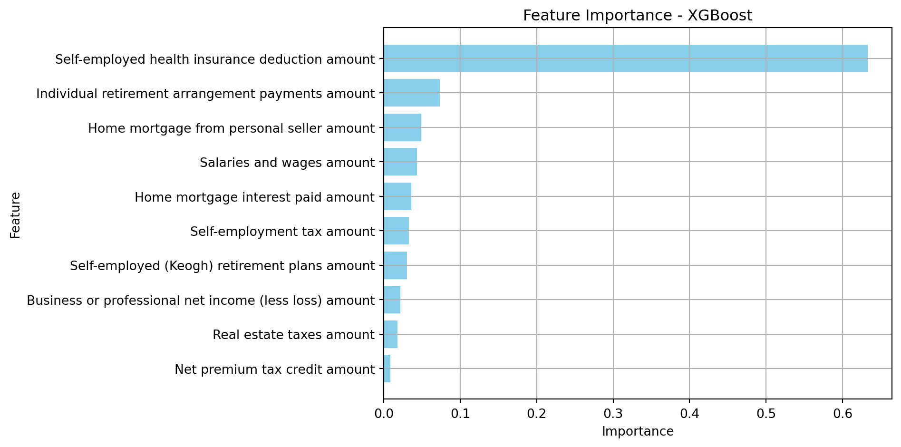
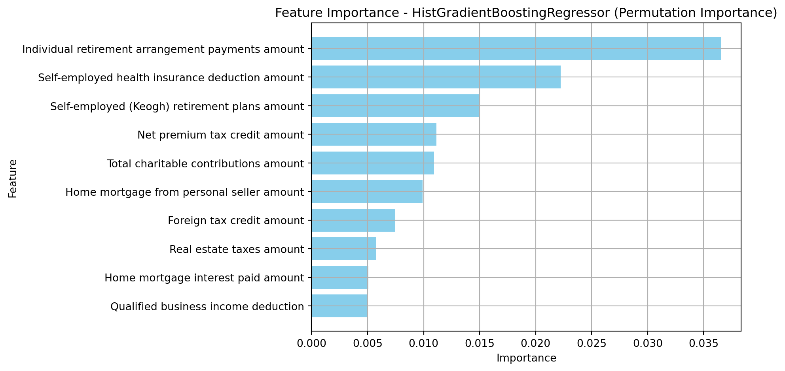
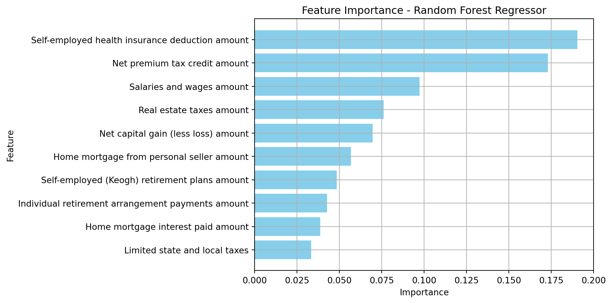
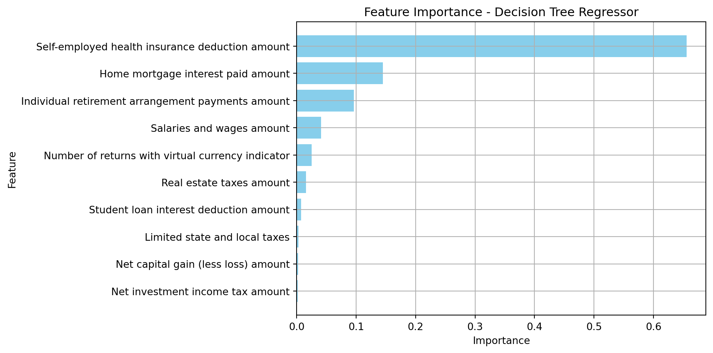
Compare Models
from sklearn.metrics import mean_squared_error, mean_absolute_error, r2_score
import pandas as pd
# Function to evaluate models and compare various metrics
def compare_model_metrics(models, X_train, y_train, X_test, y_test):
results = []
for name, model in models.items():
# Train the model
model.fit(X_train, y_train)
# Predict on the test set
predictions = model.predict(X_test)
# Calculate metrics
rmse = mean_squared_error(y_test, predictions, squared=False)
r2 = r2_score(y_test, predictions)
mae = mean_absolute_error(y_test, predictions)
mse = mean_squared_error(y_test, predictions)
# Store the results
results.append({
'Model': name,
'RMSE': rmse,
'R-squared': r2,
'MAE': mae,
'MSE': mse
})
# Convert the results to a DataFrame for easy comparison
return pd.DataFrame(results)
# Models to Compare
models_to_compare = {
'XGBoost_Regressor': xgboost_model, # Assuming xgboost_model is already defined
'Decision_Tree_Regressor': DecisionTreeRegressor(max_depth=5, random_state=42),
'HistGradientBoosting_Regressor': hist_gb_model, # Assuming hist_gb_model is already defined
'Random_Forest_Regressor': RandomForestRegressor(n_estimators=100, random_state=42),
}
# Evaluate and compare the models
model_comparison_metrics_df = compare_model_metrics(models_to_compare, X_train_transformed, y_train_grouped, X_test_transformed, y_test_grouped)
# Display the comparison results
model_comparison_metrics_df.to_csv('../../results/output/model_comparison.csv', index=False)Model Comparison Results
print(model_comparison_metrics_df) Model RMSE R-squared MAE \
0 XGBoost_Regressor 69.214073 0.892063 32.473010
1 Decision_Tree_Regressor 79.611988 0.857197 37.917499
2 HistGradientBoosting_Regressor 76.959049 0.866556 36.438862
3 Random_Forest_Regressor 71.301687 0.885454 32.290430
MSE
0 4790.587937
1 6338.068609
2 5922.695176
3 5083.930577 Visualize Model Comparison
import matplotlib.pyplot as plt
# Function to visualize the model performance differences
def plot_model_performance_comparison(df, metric):
plt.figure(figsize=(10, 6))
df_sorted = df.sort_values(by=metric, ascending=False)
plt.barh(df_sorted['Model'], df_sorted[metric], color='skyblue')
plt.xlabel(metric)
plt.ylabel('Model')
plt.title(f'Model Comparison by {metric}')
plt.gca().invert_yaxis() # Invert y-axis to have the best performing model on top
plt.grid(True)
plt.savefig(f'../../results/output/model_comparison/{metric}.png')
plt.show()
# Visualize RMSE comparison
plot_model_performance_comparison(model_comparison_metrics_df, 'RMSE')
# Visualize R-squared comparison
plot_model_performance_comparison(model_comparison_metrics_df, 'R-squared')
# Visualize MAE comparison
plot_model_performance_comparison(model_comparison_metrics_df, 'MAE')
# Visualize MSE comparison
plot_model_performance_comparison(model_comparison_metrics_df, 'MSE')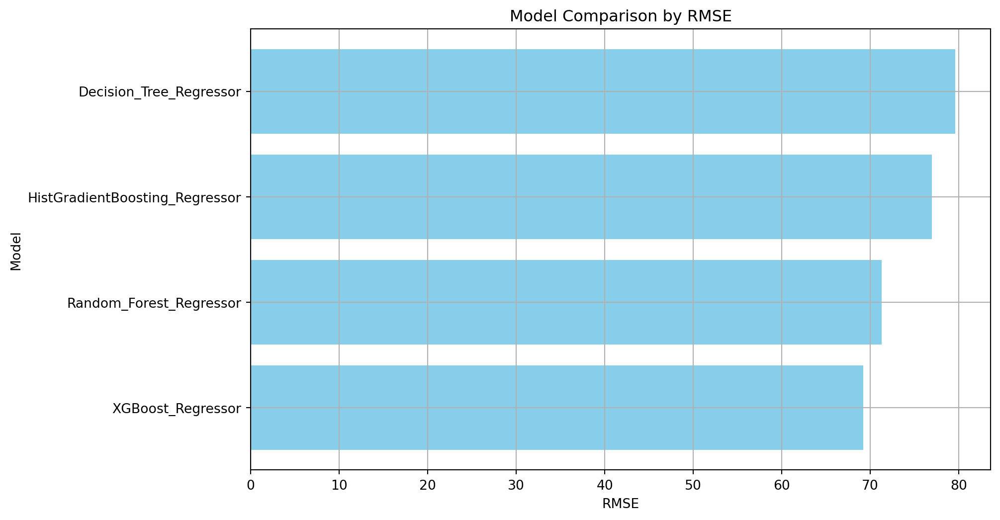
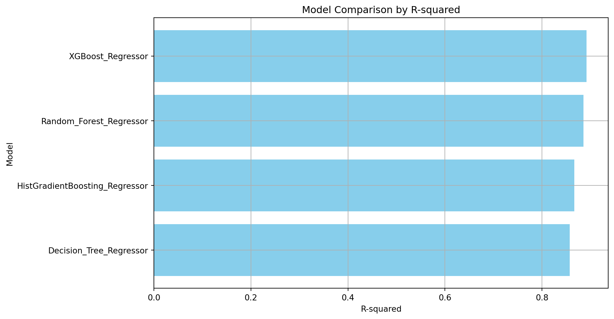
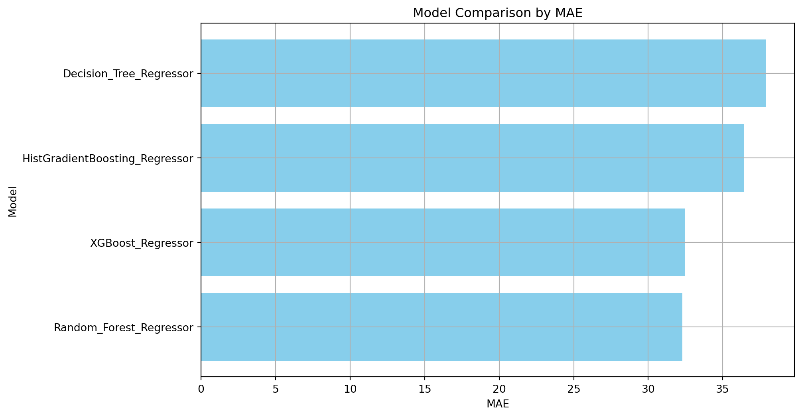
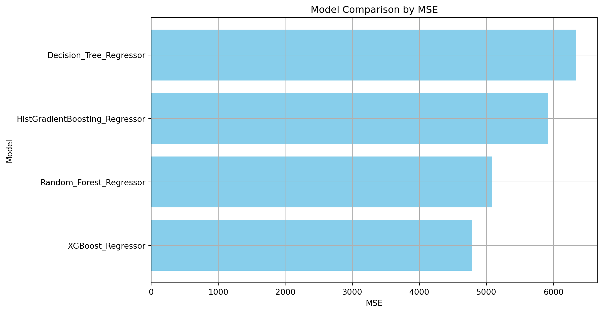
Create Coefficients DataFrame
# Import necessary libraries
import pandas as pd
import numpy as np
# Function to extract model coefficients and intercepts
def get_model_coefficients_and_intercepts(model, model_name, feature_names):
if hasattr(model, 'coef_'):
# Linear models and similar that have a coef_ attribute
coefficients = model.coef_
elif hasattr(model, 'feature_importances_'):
# Tree-based models with feature_importances_ attribute
coefficients = model.feature_importances_
else:
coefficients = np.nan # Placeholder for models without accessible coefficients
coefficients_df = pd.DataFrame({
'Feature': feature_names,
'Coefficient': coefficients,
'Model': model_name
})
return pd.concat([coefficients_df], ignore_index=True)
# Get feature names
feature_names = X_train_transformed.columns
# Initialize models (assuming they are already trained)
models = {
'XGBoost_Regressor': xgboost_model,
'Decision_Tree_Regressor': dec_tree_model,
'HistGradientBoosting_Regressor': hist_gb_model,
'Random_Forest_Regressor': rand_for_model,
}
# Collect coefficients for each model
coefficients_with_intercepts_list = []
for model_name, model in models.items():
coefficients_with_intercepts_list.append(get_model_coefficients_and_intercepts(model, model_name, feature_names))
# Combine all coefficients into one DataFrame
coefficients_df = pd.concat(coefficients_with_intercepts_list, ignore_index=True)
# Display the coefficients DataFrame
coefficients_df = coefficients_df.dropna()
coefficients_df.to_csv('../../results/output/model_coefficients.csv', index=False)